Рассмотрим схему
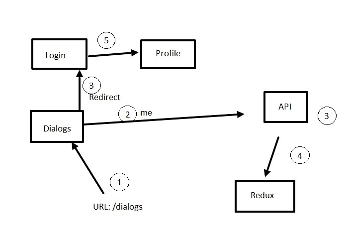Допустим что мы авторизованы
1 этап - мы ввели в URL адрес: /dialogs. Наша система настроена так, что не авторизованный пользователь не должен видеть страницу с сообщениями, так как не понятно чьи он должен сообщения видеть раз это анонимный пользователь. Соответственно система его должна будет перенаправить на страницу с логином. Если он введет свои данные произойдет редирект на страницу профайла, т.е. его главной страницы.
Итак мы авторизованы, переходим на страницу сообщений и если мы обновим страницу, то мы окажемся на странице с профайлом. Почему так выходит?
Согласно схеме после того как страница загрузилась после обновления, приложение должно понять, авторизован ли пользователь. 2 - пунктом приложение делает запрос на сервер (запрос назван условно me). Но запрос на сервер это ассинхронное действие. 3 этапом сервер будет обрабатывать запрос и делать он это будет ассинхронно. Одновременно с этим так как по факту в state не указано что прользователь авторизован 3 этапом (т.е. одновременно с отправкой запроса на сервер) будет произведен Redirect на страницу с логином. По факту мы авторизованы, просто нам сервер пока этого не сообщил. Пока будет происходить redirect 4 этапом в redux придут данные с сервера о том что мы авторизованы. И будет перерисовка приложения уже с этими данными, и нас тут же 5 этапом перенесет из страницы login на страницу профайла.
Выход из такой ситуации - это не отрисовывать вообще ничего до тех пор пока не произойдет инициализация. Что такое инициализация? Это набор данных в state которые мы должны прослушивать перед тем как отрисовать приложение. Например можно создать в state значение initialized - это будлевое значение, которое будет содержать значение false пока не произойдет запрос на сервер - me (проверка авторизован ли пользователь или нет.) Только после того как запрос me будет совершен (не важно что он вернет), только после этого initialized поменяется на true и только тогда будет выполнен render
1 Первое что нужно сделать - это превратить нашу компоненту App.js в классовую компоненту, и методе жизненного цикла componentDidMount мы будем делать запро me на сервер
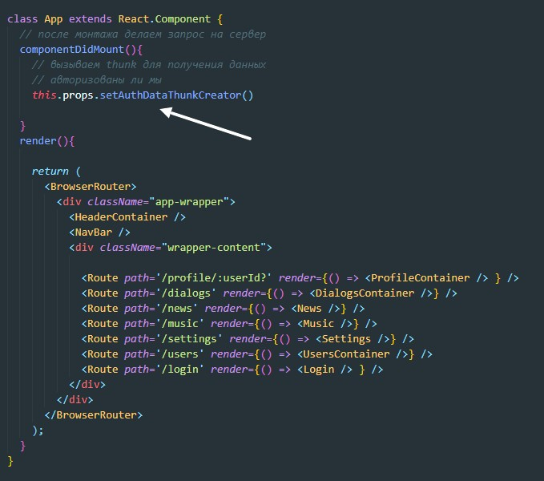Оборачиваем App коннектом что бы пробросить callback которая запускает thunk
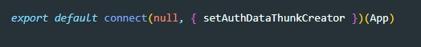2 Далее необходимо создать еще один reducer который будет отвечать за участок state который будет в свою очередь говорить нам о состоянии инициализации.
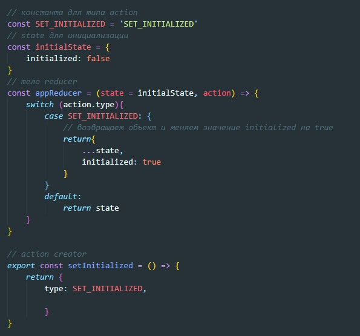Здесь же создаем thunk которая должна диспатчить наш action только тогда когда будет выполнен запрос me на сервер
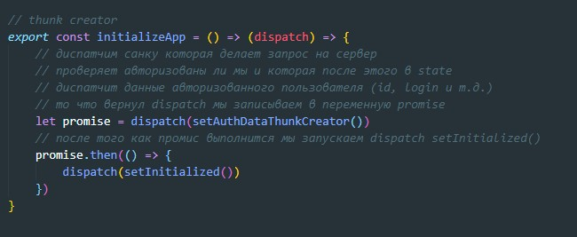Почему в данном случае dispatch что то возвращает? потому что если в thunk мы вы полнили команду return перед вызовом запроса на сервер (axios) и в итоге dispatch нам вернул promise
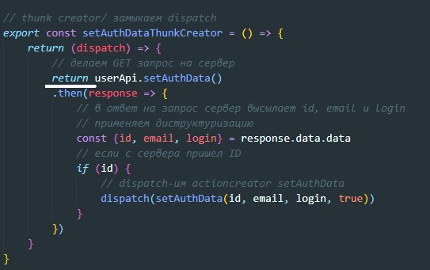Т.е. если бы мы написали вот так:
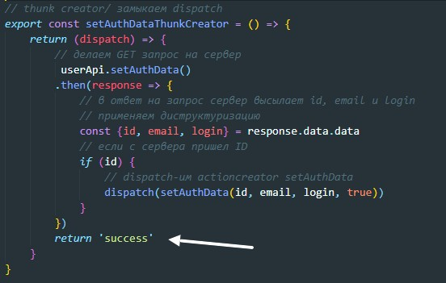То dispatch нам бы вернул строку 'success'
Но что если нам надо дождаться несколько dispatch-ей т.е. выполнения нескольких промисов? тогда наша запись выглядела бы так:
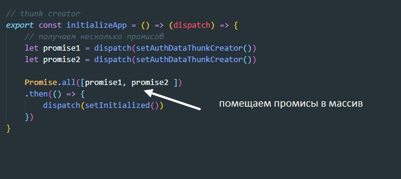3 Импортируем наш thunk в App
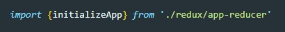Пробрасываем через пропсы с помощью connect thunk, а так же участок state который будет отвечать за инициализацию
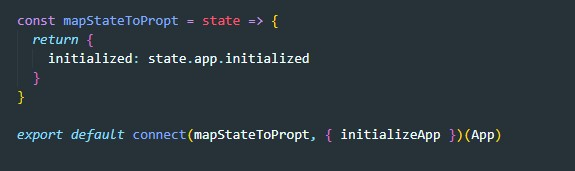И конечно же не забываем в Redux указать наш новый reducer иначе участка в state так и не создадут
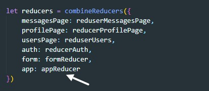Все что нам остается это прописать условие: если в state initialized = false то render крутилку прелоадера иначе будет отрисовываться весь контент страницы
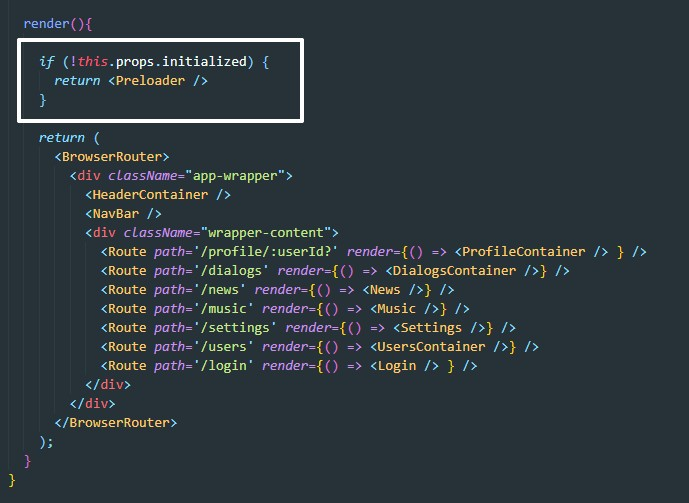После этого проблем больше не будет